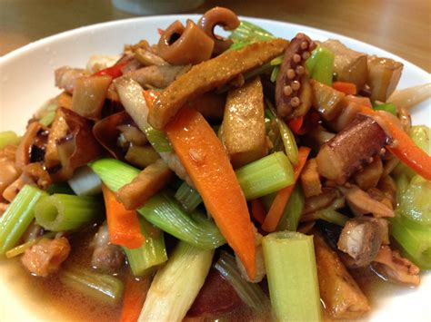
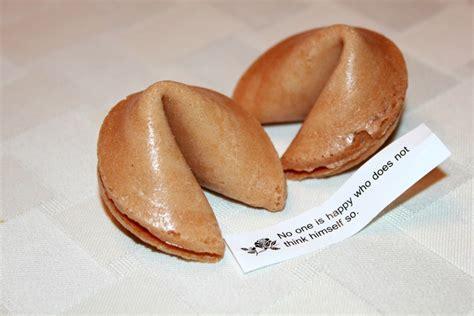

Chow mein is one of the most common foods in chinese culture and is a stir-fried dish consisting of noodles, meat with chicken being most common but pork, beef, shrimp or tofu.
A fortune cookie is a crisp and sugary cookie wafer made from flour, sugar, vanilla, and sesame seed oil with a piece of paper inside, a "fortune", an aphorism, or a vague prophecy.
Chinese Hot Pots hotpot, also known as steamboat, is a dish whereby a heat source placed on the dining table keeps a pot of soup stock simmering, and accompanied with an array of Chinese foodstuffs and ingredients and food offerings provided for the diners to dip into the flavorful broth.